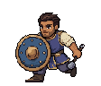
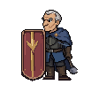
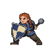
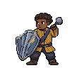
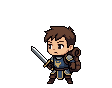
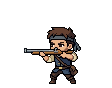

B1 Caravan Captain
A bearded escort steps forward behind a brass-rimmed round shield.
PNG · LibreSpriteChoose the shield-bearer to animate.

A bearded escort steps forward behind a brass-rimmed round shield.
PNG · LibreSprite
A grey-haired veteran rests his mace beside a tall oxblood shield.
PNG · LibreSprite



